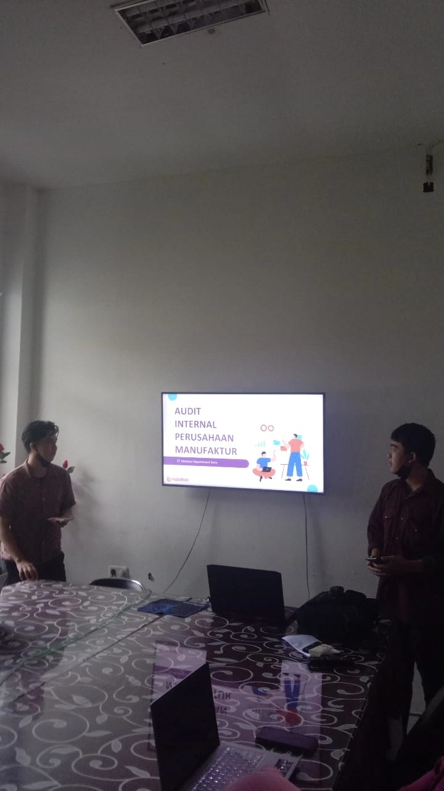
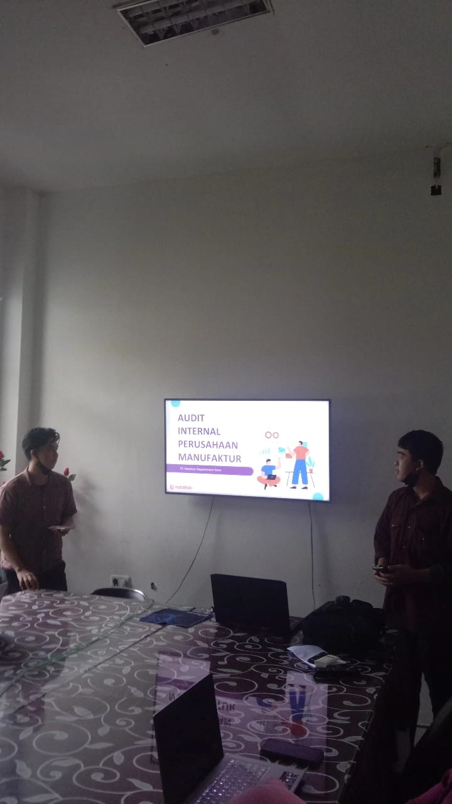

Selamat datang di portofolio saya. Saya senang bisa berbagi sedikit tentang diri saya dengan Anda. Perkenalkan, nama saya adalah Rifqi Nanda, dan saya berasal dari Sulawesi Tengah. Saya lahir pada tanggal 2 Mei 2003, sehingga sekarang saya berusia 20 tahun. Saat ini, saya adalah seorang mahasiswa di Universitas Tadulako, di mana saya mengambil program studi Sistem Informasi. Saya adalah anak pertama dari dua bersaudara, dan saya selalu merasa bertanggung jawab terhadap keluarga saya. Selain fokus pada pendidikan, saya juga memiliki berbagai minat dan hobi yang saya nikmati dalam waktu luang saya. Salah satu hobi utama saya adalah bermain gitar. Musik telah menjadi bagian penting dalam hidup saya, dan bermain gitar memberi saya kesempatan untuk mengekspresikan diri dan merelaksasi pikiran. Di samping itu, saya juga memiliki ketertarikan dalam dunia permainan. Saya adalah seorang gamer yang gemar mencoba berbagai jenis game. Saya suka bermain game mobile seperti Mobile Legends dan PUBG Mobile, tetapi saya juga senang mencoba berbagai game lainnya, baik yang ada di konsol maupun di komputer. Bagi saya, bermain game bukan hanya hiburan, tetapi juga cara untuk mengasah keterampilan, berkolaborasi dengan orang lain, dan menguji kreativitas. Saya selalu bersemangat untuk belajar dan tumbuh sebagai individu. Portofolio ini akan memberi Anda gambaran lebih lanjut tentang proyek-proyek dan pencapaian-pencapaian saya. Terima kasih telah mengunjungi portofolio saya, dan saya harap Anda menemukan informasi yang berguna dan menarik di sini. Jika Anda memiliki pertanyaan atau ingin berhubungan, jangan ragu untuk menghubungi saya. Saya selalu siap untuk berkomunikasi dan berkolaborasi dalam berbagai proyek yang menantang.
1. Desain : saya suka mendesain website
2. Analisis : saya suka menganalisis tentang perkembangan teknologi
3. Gitar : Saya Lumayan Mahir dalam Memaikan Gitar
4. Merakit
Silakan hubungi saya di rifqinanda55@gmail.com
 
